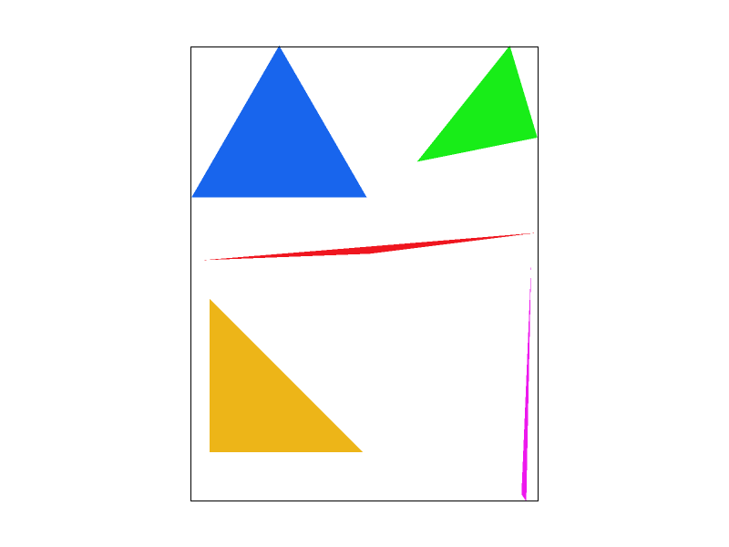

CS184/284A Spring 2025 Homework 1 Write-Up
Link to webpage: https://cal-cs184.github.io/hw-webpages-su25-gonzaIke/
Link to GitHub repository: https://github.com/cal-cs184/hw-rasterizer-ggez

Overview
This assignment implements an SVG rasterizer that supports anti-aliasing, affine transformations, texture mapping, and more. Through this assignment, I gained an in-depth understanding of the basics of graphics such as triangle rasterization, oversampling antialiasing, affine transforms, center of gravity coordinates, pixel sampling, and multi-level texture sampling.
In the process of implementation, I encountered somewhat difficult problems such as sampling buffer management, transformation matrix derivation, and sampling algorithm efficiency. For example, how to manage the supersample buffer efficiently, how to implement the affine transformation matrix correctly, and how to make the sampling algorithm both correct and efficient. Through consulting information, debugging and discussing with classmates, I gradually solved these problems and gained a lot.
Task 1: Drawing Single-Color Triangles
I implemented triangle rasterization using bounding box scanning and edge function methods. The specific steps are as follows:
- First, calculate the bounding box of the triangle, only traverse the pixels within the bounding box to avoid invalid calculations.
- For each pixel, the sampling point is the center of the pixel (i+0.5, j+0.5).
- Use the signed area of the three edges (cross product) to determine whether the sampling point is inside or on the edge of the triangle.
- If the sampling point is inside the triangle, call fill_pixel to fill the pixel.
The following is the rendering result of basic/test4.svg, and the pixels at the boundary of the triangle are observed using the pixel inspector, and it can be seen that the color of the boundary pixel changes, indicating that the jaggies are obvious when not anti-aliasing.

Task 2: Antialiasing by Supersampling
To solve the problem of jaggies, I implemented oversampling antialiasing (supersampling). The specific steps are as follows:
- Each pixel is uniformly distributed with sqrt(sample_rate) x sqrt(sample_rate) sub-sampling points inside.
- Each sub-sampling point is independently judged whether it is inside the triangle, and the result is written into the supersample buffer.
- Finally, the color of each pixel is averaged by all sub-sampling points to obtain the final pixel color, achieving the effect of anti-aliasing.
Oversampling can effectively smooth the edges of triangles, reduce jaggies, and improve image quality.

|

|

|
As can be seen, the higher the sampling rate, the smoother the edges, and the fewer the jaggies. Especially in the thin corners and sloping edges of the triangle, when sample rate = 16, almost no jaggies can be seen, and when sample rate = 1, the jaggies are very obvious.
Task 3: Transforms
I made cubeman do a wave and run pose in my_robot.svg. Here's what I did:
- Add a large negative rotation (forward swing/wave) of the right arm, such as
<g transform="translate(90 -40) rotate(-60)"> - Left arm backswing,
<g transform="translate(-90 -40) rotate(30)"> - Left leg front swing,
<g transform="translate(-40 90) rotate(-30)"> - Right leg backswing,
<g transform="translate(40 90) rotate(20)"> - Body overall forward lean, outermost
<g transform="translate(250 250) rotate(-15)">
I hope cubeman looks lively, both waving and greeting as well as making running dynamics. By adjusting the angle of rotation of the limbs and body, the desired effect is achieved.


Task 4: Barycentric coordinates
In order to achieve a smooth transition of an object's medium such as color in this case, we will interpolate a specific value found on each vertex of the triangle and essentially spread it evenly across the area inside the triangle. Barycentric coordinates are used in this case to calculate the weight, represented as alpha, beta, and gamma, that each position holds with respect to the color found in each vertex. It overall depends on how far the coordinate is from these vertices. By weight, I am referring to the cumulative value of the colored vertices at each point that when interpolation is complete, the triangle will have an appearance resembling a color wheel. If we have a triangle with red, blue, and green vertices, the color inside the triangle will be a shade of the three colors along with the colors in-between, and the closer a point on the triangle is to a vertex, the more it will resemble the color of the vertex due to a higher respective weight.

Task 5: "Pixel sampling" for texture mapping
Pixel sampling is the process of taking the surrounding sample points of the texture point (u, v) and determining the cumulative color of that pixel by its area. It differs between both neighbor sampling (nearest) and interpolation sampling (bilinear).
The nearest sampling method follows a short and simple algorithm:
- Get the UV coordinates of the point.
- Get the color from the closest texture point by rounding the coordinates.
The bilinear sampling method follows a much longer process:
- The first step was to normalize the UV coords to texel space with both x and y, scaling them by the dimensions of the texture (width and height).
- Then based on the point, I need to find the surrounding 4 texel coords.
- This was done by finding the max and min of both the x and y points using ceil and floor.
- After that, the next goal is to get the color of each of the 4 texels.
- Then, once I have all the colors, I need to account for the offsets of each texel coordinate.
-
Last would be to lerp out the weighted combination of the 4 texels to return the final color:
- Linear interpolation (1D):
lerp(x, v0, v1) = v0 + x(v1 - v0) - Two helper lerps:
u0 = lerp(s, u00, u10)u1 = lerp(s, u01, u11)
- Final vertical lerp, to get result:
f(x, y) = lerp(t, u0, u1)
- Linear interpolation (1D):
|
|
|
|
|
|
While the Nearest method is cheaper and faster, it comes at the trade of aliasing and pixelation at a close-up. The Bilinear method is quite the opposite, with noticeably cleaner visuals in deatil, along with a more expensive price and runtime.
Task 6: "Level Sampling" with mipmaps for texture mapping
Level sampling is the process of determining which mipmap level of a texture to sample from, based on how much a texture is being minified or magnified at a given screen-space location. This type of sampling adds-on to the texture mapping, but instead of assuming we always stay on Level 0, the lowest level with the highest resolution, we now can also choose a higher level for a lower resolution. We now have to account for the neighbors of the uv coordinates, in order to compute the mipmap level using the formula:
D = log2(max((du/dx)^2 + (dv/dx)^2, (du/dy)^2 + (dv/dy)^2))
We do this to support sampling different Mipmap levels, calculating the uv barycentric coordinates varying (x+1, y+1). In my implementation, I extended my texture sampling function to support multiple level sampling modes (L_ZERO, L_NEAREST, and L_LINEAR) based on the SampleParams struct passed from the rasterizer.
The three sampling techniques have their own tradeoffs. Pixel sampling is the fastest and least space intensive, but can produce visible aliasing that we don't want. Level sampling improves the image quality by selecting appropriate mipmap levels, but at the cost of extra memory for storing mipmaps. Supersampling provides the best anti-aliasing by averaging multiple samples per pixel, but it is the most expensive.
|
|
|
|
|
|